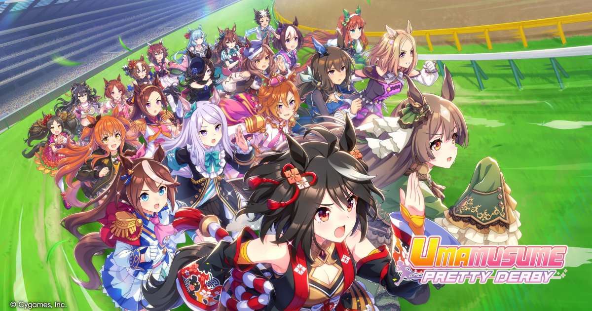
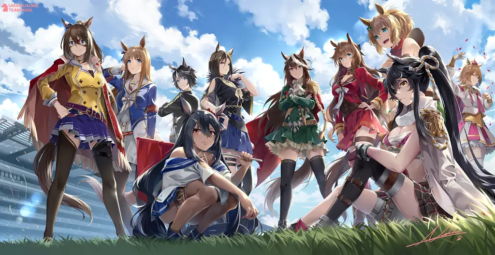
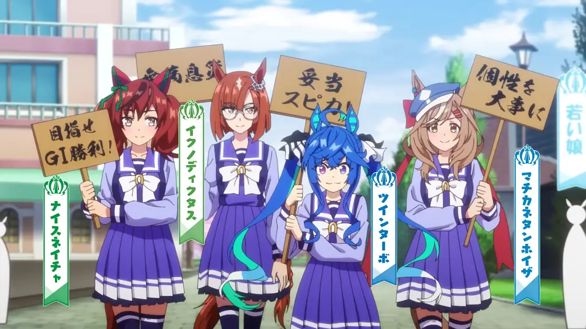
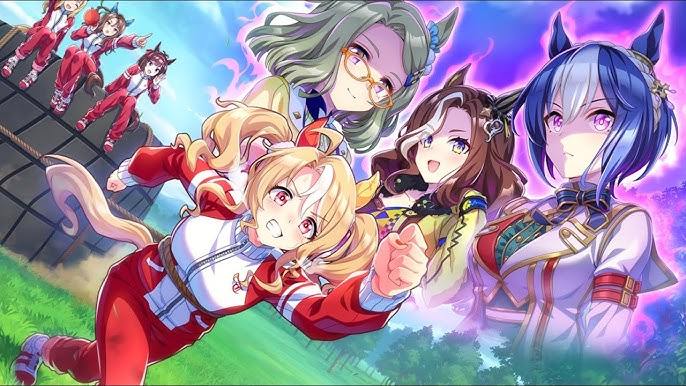
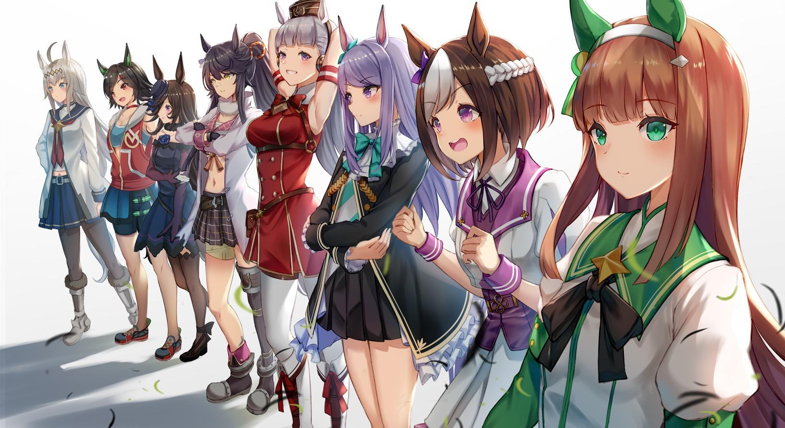

Umamusume. They are born to run. They inherit the names of horses from another world, whose histories were sometimes tragic and sometimes wonderful, and run ever forward. That is their fate. No one knows how the races waiting in the futures of these Umamusume will end. But they will continue to run, aiming only toward the goal in front of them. Umamusume is a multimedia franchise created by Cygames. First revealed in 2016, it continues to grow to this day, spanning multiple anime projects, games, and more.
Team Spica

Team Spica (チームスピカ) is one of Tracen Academy's umamusume teams and is only featured in the anime.
Members:
- Special Week
- Silence Suzuka
- Tokai Teio
- Mejiro McQueen
- Gold Ship
- Vodka
- Daiwa Scarlett
- Kitasan Black
Team Rigil

Team Rigil (チームリギル) is one of Tracen Academy's horse girl teams and currently the best team in the school.
Members:
- Symboli Rudolph
- Air Groove
- Maruzenski
- Grass Wonder
- El Condor Pasa
- Taiki Shuttle
- T.M. Opera O
- Narita Brian
- Hishi Amazon
- Fuji Kiseki
- Daring Tact
Team Canopus

Team Canopus (チームカノプス) is one of Tracen Academy's horse girl teams.
Members:
- Nice Nature
- Twin Turbo
- Ikuno Dictus
- Machikanetannhauser
- Sounds of Earth
- Royce and Royce
Team Ascella

Team Ascella is a Tracen Academy team that appears in the second part of the game's main story.
Members:
- King Halo
- Rhein Kraft
- Cesario
- Fusaichi Pandora
Team Sirius

Team Sirius (チームシリウス) is a Tracen Academy team that only appears in the mobile game. The Player is the trainer for Team Sirius.
Members:
- Mejiro McQueen
- Gold Ship
- Rice Shower
- Winning Ticket
- Narita Brian
- Special Week
- Silence Suzuka
- Oguri Cap (Formerly)